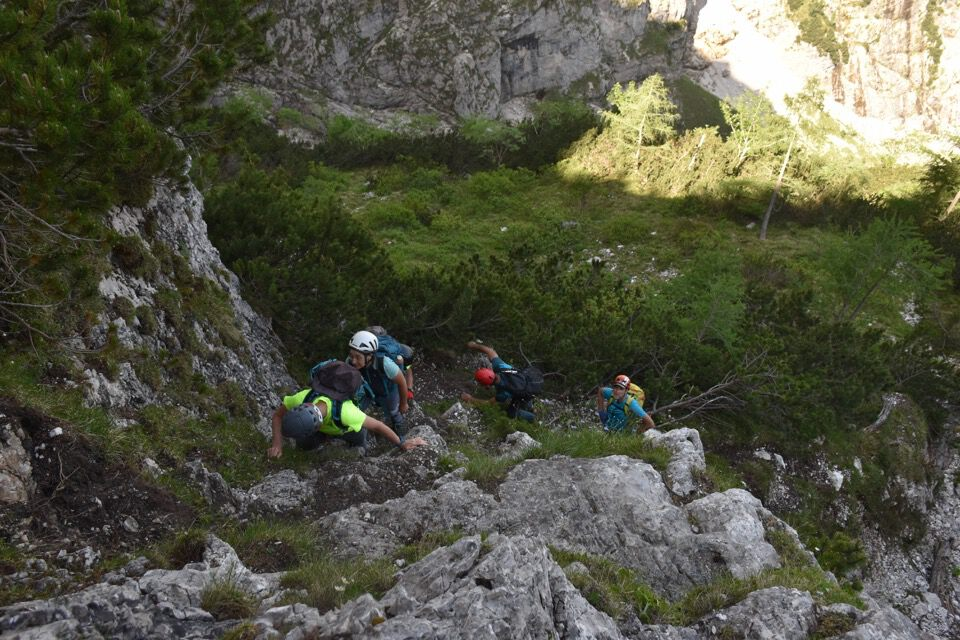
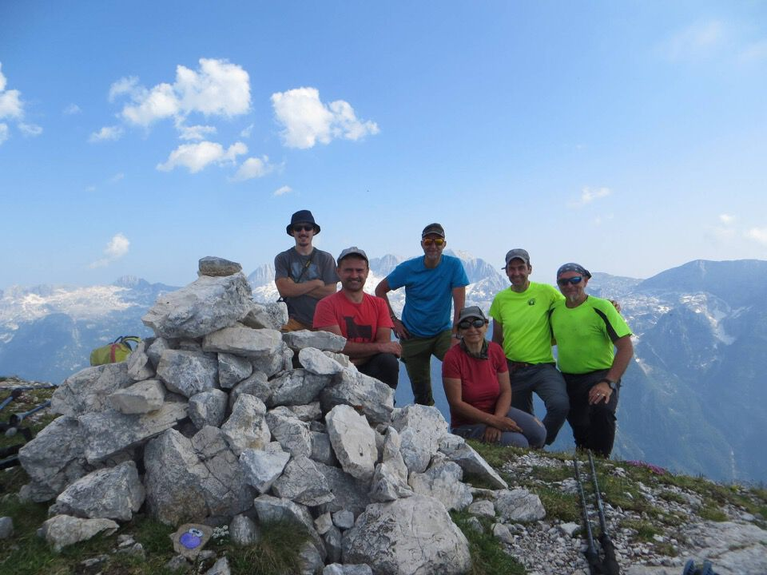

«Salita lunga e complicata su terreno infido, riservata a persone pratiche della montagna. Pur presentando tratti difficili e pericolosi, costituisce oggi l'itinerario più agevole per traversare da Sot Goliz sul versante della Val Raccolana. Noto ai cacciatori, il percorso è anche da questi pochissimo frequentato. Nella parte alta esso segue la leggendaria via che sale allo Zâbus dal Rio Saline; lungo di essa era disceso il 18.8.1888 A. Gstirner accompagnato dalla guida Giuseppe Piussi di Val Raccolana, allora sessantunenne. Quattro settimane più tardi la stessa guida vi portò in salita J. Kugy («grandiosa traversata» egli la definì nel suo libro di memorie alpine).» (Marini-Galli)
È tutto così grandioso, così tanto desiderato... da quando due anni fa l'osservai da Bieliga non c'ho più staccato gli occhi.
Percorrerla e poi pubblicarne le foto mi pare una profanazione.
Di buon'ora nel rio Saline chiuso dalle sue maestose crode.
L'ambiente è grandioso ed opprimente.
L'impressionante gola di Vandûl.
Di qua?
Prova e riprova, ma non se ne esce; iniziamo a pensare che pure noi saremo catturati dalla «maledizione» di questa via.
Nell'angoscia mi chiedo se qualcuno effettivamente ci sia mai passato di qui, o se sia tutto un'invenzione...
«Scendiamo e proviamo di là, si potrebbe fare una piramide umana.»
«Mi sa che tu hai letto troppi libri di Kugy...»
Il maestoso «portale» del Semedòn, luogo di austera sacralità: un silenzio reverenziale s'impone in me.
Massimo e Tomaso: proprio con loro, poche settimane prima, ho percorso la cengia ascendente dello Jôf di Miéz che si vede bene in foto.
«Incombono maestosi pinnacoli marmorei, avancorpi settentrionali della cima più alta del monte» (Marini-Galli).


Il dream team che ha vinto la «big wall del greppo» (cit. Norman): complimenti a tutti.
È impressionante vedere sia da dove siamo partiti (Plèziche), sia le cenge su cui siamo passati.
Ultimo sguardo al rio Saline con la sua aguzza sentinella.
In discesa ci si rilassa riempiendosi gli occhi di bellezza.
«L'incanto di quel giorno è rimasto lungo tutta l'estate e tutto l'inverno, a permetterci di credere che ci possono essere azioni non utili, eppure le uniche capaci di riempire veramente la vita.»
(Da «Un giorno sulle Marmarole», Vincenzo Altamura, Le Alpi Venete Primavera-Estate 1966)